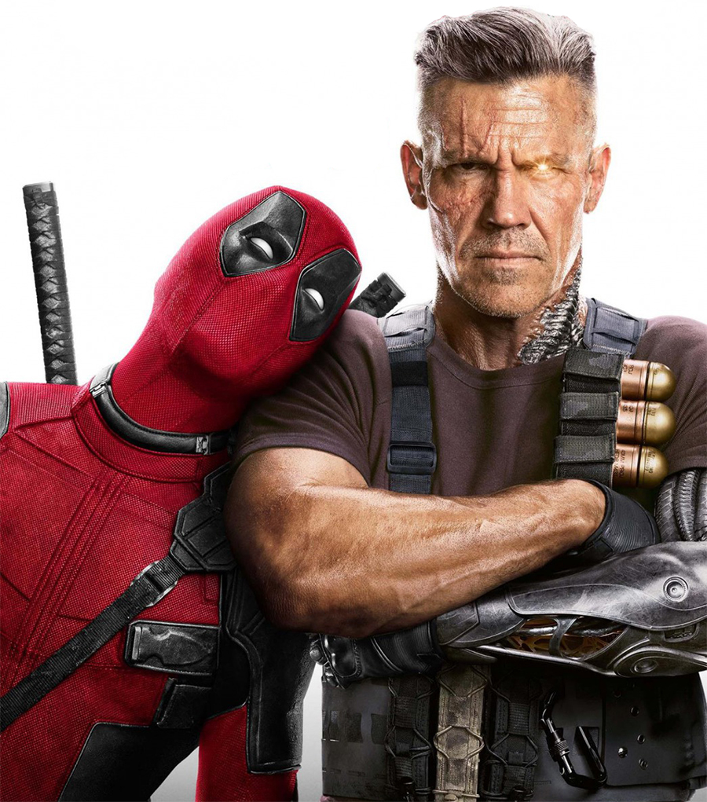
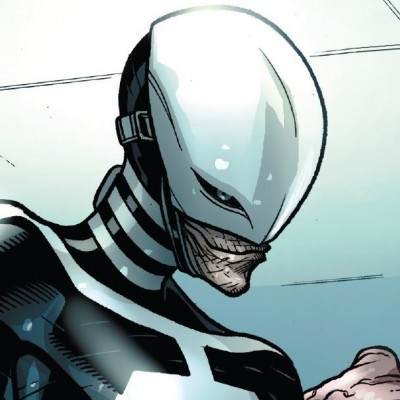
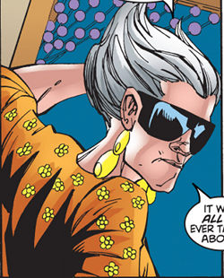
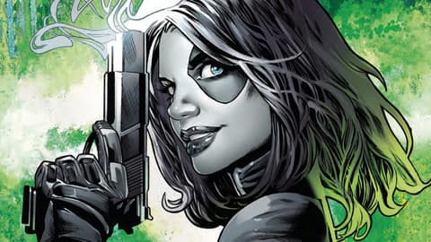
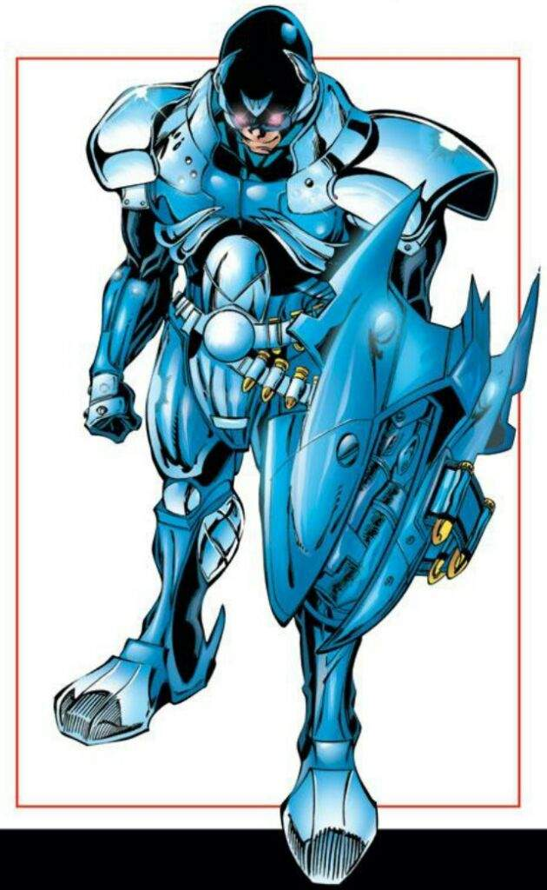
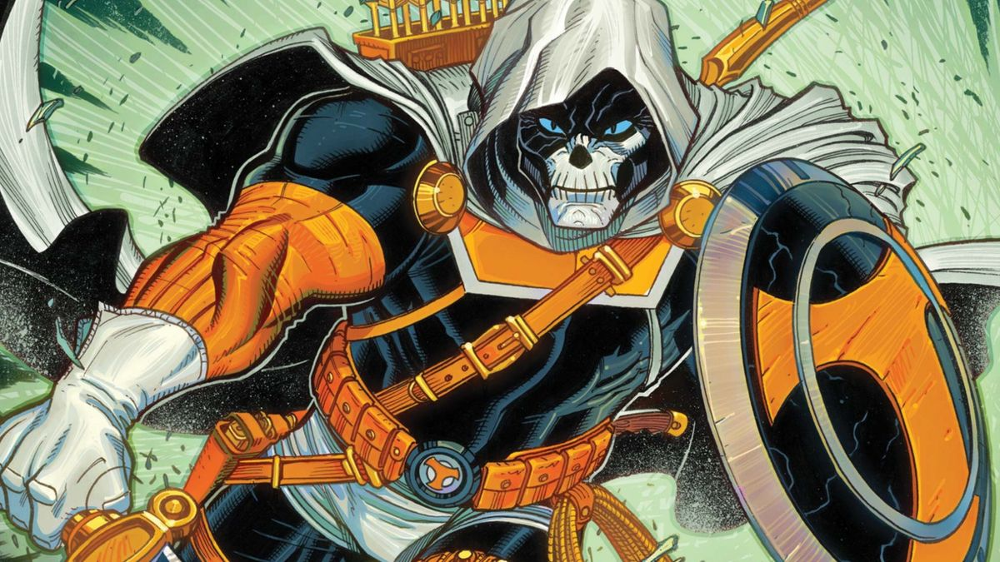
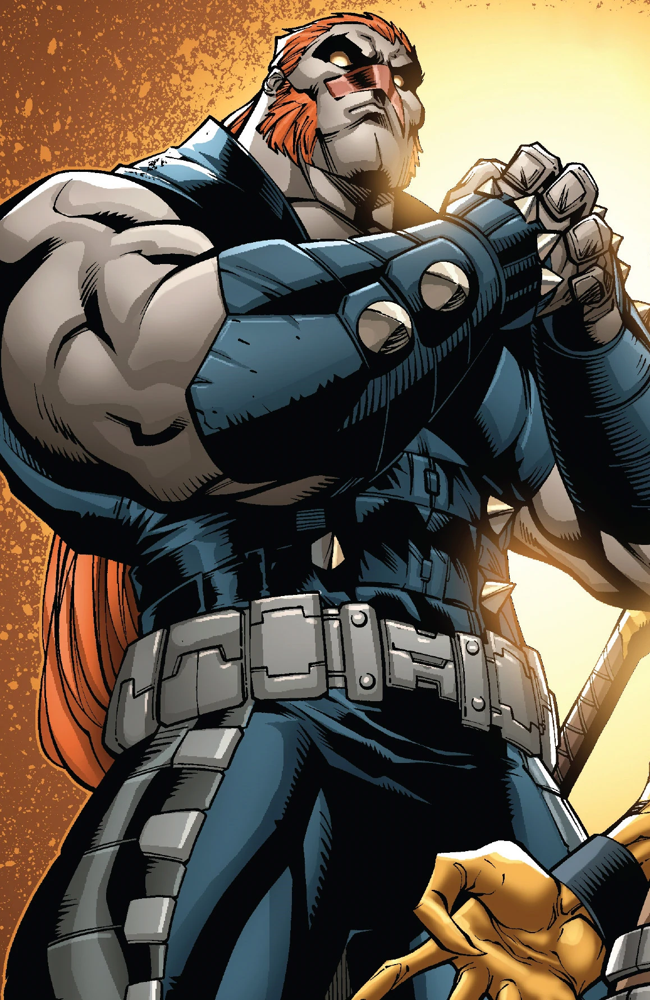
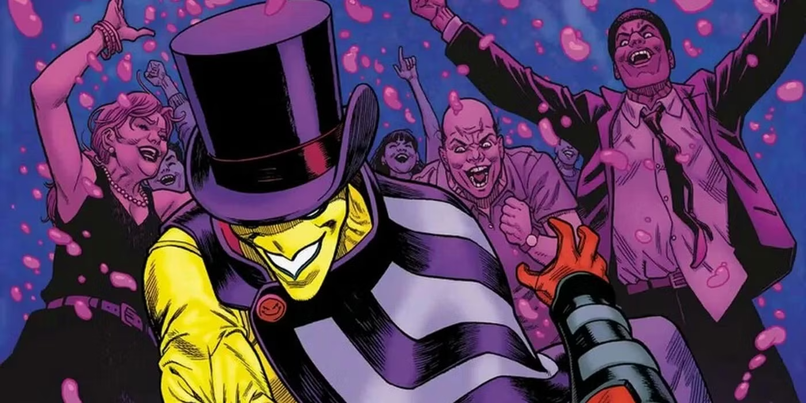

Sobre DeadPool
Deadpool
Criado por Rob Liefeld e Fabian Nicieza, Deadpool estreou em New Mutants #98 (1991) como um vilão sarcástico, inspirado no antagonista da DC Comics, Exterminador (Deathstroke). Seu nome real, Wade Wilson, é uma paródia direta ao "Slade Wilson" do Exterminador, reforçando a homenagem irônica.
Infância e Tragédia
Wade teve uma infância traumática:
- Mãe: Morreu de câncer quando ele era criança
- Pai: Um militar alcoólatra que o espancava. Wade acabou matando-o durante uma briga
O Projeto Arma X e a Transformação
Diagnosticado com câncer terminal, Wade se voluntariou para o Projeto Arma X, um programa canadense que buscava criar super-soldados. O experimento replicou o fator de cura de Wolverine nele, mas com efeitos catastróficos:
- Regeneração acelerada: Capacidade de sobreviver a ferimentos mortais, incluindo decapitação 3611.
- Deformação física: Sua pele ficou desfigurada, obrigando-o a usar uma máscara 510.
- Instabilidade mental: O processo danificou seu cérebro, tornando-o imprevisível e propenso à "loucura" 38.
Carreira como Mercenário
Após fugir do projeto, Wade adotou a identidade de Deadpool e se tornou um mercenário freelancer, aceitando trabalhos para criminosos, governos e até heróis. Suas características únicas incluem:
- Quebra da quarta parede: Conversa com os leitores, comenta enredos e zomba dos roteiristas 3611.
- Humor ácido: Piadas em situações brutais, satirizando o universo dos super-heróis 25.
- Moralidade flexível: Mata por dinheiro, mas ocasionalmente age por compaixão (ex.: salvar o clone Evan de Apocalipse)
Aliados
Cable(Nathan Summers)

- Relação: Parceiro de equipe e "amigo" caótico.
- Destaque: Trabalharam juntos em Cable & Deadpool, formando uma dupla improvável que equilibra seriedade e humor.
- Filme: Aparece em Deadpool 2 como aliado temporário.
Weasel(Jack Hammer)

- Relação: Melhor amigo e fornecedor de armas/tecnologia.
- Destaque: Sempre ajuda Deadpool em missões, mesmo reclamando de seu comportamento imprevisível.
Blind AI

- Relação: Refém que virou confidente e figura materna.
- Destaque: Suas interações sarcásticas revelam o lado vulnerável de Wade.
Domino(Neena Thurman)

- Relação: Colega de equipe no X-Force.
- Destaque: Parceria baseada em respeito mútuo, apesar do caos que Deadpool causa.
Vilões
Ajax/Francis Freeman

- Relação: Antagonista central no filme Deadpool (2016).
- Destaque: Líder do Projeto Arma X que deformou Wade, tornando-se seu maior inimigo.
Taskmaster

- Relação: Mercenário rival que copia habilidades de combate.
- Destaque: Treinou Deadpool no passado, mas virou inimigo por traição.
T-Ray

- Relação: Arqui-inimigo dos quadrinhos.
- Destaque: Alega ser o "verdadeiro Wade Wilson" e usa magia para atormentá-lo.
Madcap

- Relação: Vilão que se fundiu com Deadpool temporariamente.
- Destaque: Responsável por parte de sua instabilidade mental em certas HQs